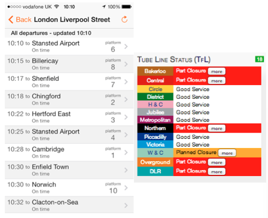

Making data open

Licensing matrix

Credit: Thomas Levine
Credit: Thomas Levine
What can open data do for you? from Open Data Institute on Vimeo.
 Helps us get from A to B quicker
Open data can help make decision that affect our safety